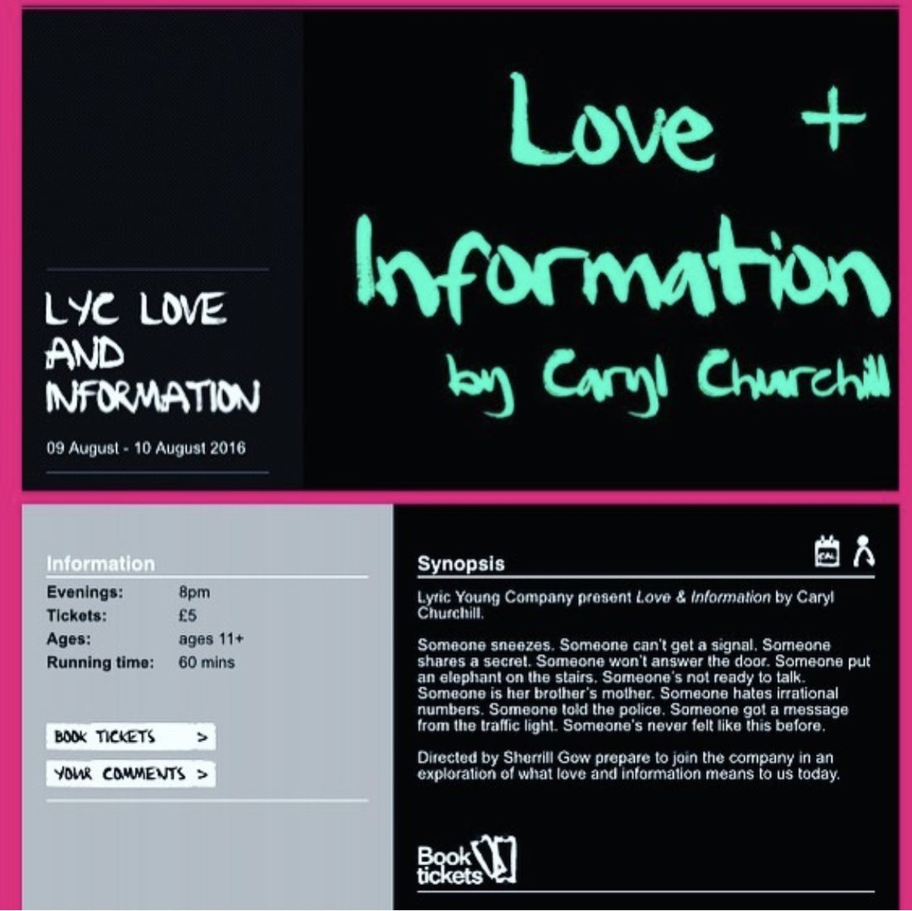

Ayo
Hana
British-American actor, writer and producer, based in London.
Producer
She makes the work rather than waits for it.
Ayo runs JoyTown Productions, her own banner, and has taken two projects through from first draft to delivery under it.
The most recent is Overthinking It, a comedy short she financed privately and produced end to end: casting, crew, contracts, schedule, two shooting days in a single London flat, and post. Everyone on it was contracted, paid and credited. It is in post-production, targeting an international festival run in 2027. Before it, she wrote, produced and narrated The Budget Generation, five episodes of scripted audio.


Writer
Comedy built out of small, recognisable disasters.
She wrote Overthinking It as a hyper-stylised comedy: split screens, rapid-fire monologues and montage applied to two people going too far on very little evidence. The writing is character-first and structurally precise, which is what allows a film that size to be shot in two days.
Her scripted audio work runs on the same instinct, taking a subject people avoid and writing it as something worth listening to.
Actor
Trained at LAMDA. Native in two accents.
Ayo trained at LAMDA and came up through the National Youth Theatre of Great Britain and the Lyric Hammersmith Young Company, where she appeared in Caryl Churchill’s Love and Information.
She is currently filming a supporting role in a feature, which remains confidential until the production announces it. Recently she played the lead in Chess, a debut short from BraideFilms, and she co-leads Overthinking It as Temi.
A dual UK and US citizen with the full right to work in both countries, she is native in British and American accents and works across the London, Dublin and New York markets.
Enquiries
Casting and acting work goes through Beresford Management, London.
They hold the current showreel, voice reel and full credit list, and will send them on request. For writing, producing or anything to do with JoyTown, use the production contact.
